In this chapter we will learn about different types of spatial datasets (raster and vector). We will visualize these spatial datasets using static and interactive plotting options available in R. We will also explore different color palettes options available for generating spatial maps for scientific/technical reporting of spatial datasets. We will also learn briefly explore coordinate reference systems and map projections for spatial data representation.
3.1.1 Sample dataset
We will familiarize ourselves with several open-source global datasets and use them to practice spatial mapping and computing in R.
The sample dataset for this resource is uploaded to GitHub for easy access. Download the sample data manually as a zip file from: https://github.com/Vinit-Sehgal/SampleData . Once downloaded, extract the zip folder to the current working directory.
Alternatively, use the following script to programmatically download and extract the sample data from the GitHub repository.
################################################################~~~ Import sample data from GitHub repositoryif (dir.exists("SampleData-master")==FALSE){ # First we check if the folder already exists. If not, the download beginsdownload.file(url ="https://github.com/Vinit-Sehgal/SampleData/archive/master.zip",destfile ="SampleData-master.zip") # Download ".Zip"# Unzip the downloaded .zip fileunzip(zipfile ="SampleData-master.zip")}# getwd() # Current working directorylist.files("./SampleData-master") # List folder contents. Do you see sample datasets?
A geographic information system, or GIS refers to a platform which can map, analyzes and manipulate geographically referenced dataset. A geographically referenced data (or geo-referenced data) is a spatial dataset which can be related to a point on Earth with the help of geographic coordinates. Types of geo-referenced spatial data include: rasters (grids of regularly sized pixels) and vectors (polygons, lines, points).
In this section, we plot global raster data of surface (~5 cm) soil moisture from SMAP. Let’s start by first importing the global soil moisture raster.
# Import package for raster operationslibrary(terra) # Import SMAP soil moisture raster from the downloaded foldersm=terra::rast("./SampleData-master/raster_files/SMAP_SM.tif")
Once we have imported the SpatRaster (short for “spatial raster”) using rast() function from terra package, let’s note its attributes. Notice the dimensions, resolution, extent, crs i.e. coordinate reference system and values. Note that the cell of one raster layer can only hold a single numerical value.
# Print raster attributesprint(sm)
class : SpatRaster dimensions : 456, 964, 1 (nrow, ncol, nlyr) resolution : 0.373444, 0.373444 (x, y) extent : -180, 180, -85.24595, 85.0445 (xmin, xmax, ymin, ymax) coord. ref. : lon/lat WGS 84 (EPSG:4326) source : SMAP_SM.tif name : SMAP_SM min value : 0.01999998 max value : 0.87667608
# Try:# dim(sm) # Dimension (nrow, ncol, nlyr) of the raster# terra::res(sm) # X-Y resolution of the raster# terra::ext(sm) # Spatial extent of the raster# terra::crs(sm) # Coordinate reference system
Now let’s plot the raster using terra::plot.
# Basic Raster plot terra::plot(sm, main ="Soil Moisture")
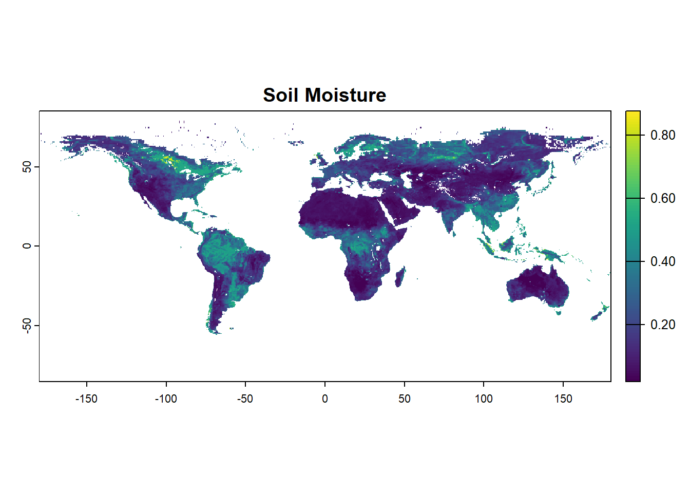
3.2.2 Color palettes
Using a good color palette is an important aspect of spatial mapping. Choice of a good colormap can help the readers understand the key aspects of the map. The selected colors must adequately represent the key features and their differences, wherever applicable, with the least distortion, ambiguity or effort. There are several libraries available in R specifically dedicated to generating color pelettes for scientific mapping. We will also learn the the usage of cetcolor and scico packages to generate perceptually uniform and color-blindness friendly palettes.
Some key packages for generating color palettes for scientific mapping are:
# Libraries for generating Colour paletteslibrary(RColorBrewer)library(cetcolor)library(scico)# To view color palette library(unikn) #~~ A) User defined color palette using brewer.palmypal1 = RColorBrewer::brewer.pal(10, "Spectral") # Brewerpal outputs a max of 9-11 colors. So,the pelette may needs expansion.mypal2=colorRampPalette(mypal1)(20) # Expand pelette to 20 colorsunikn::seecol(mypal2)
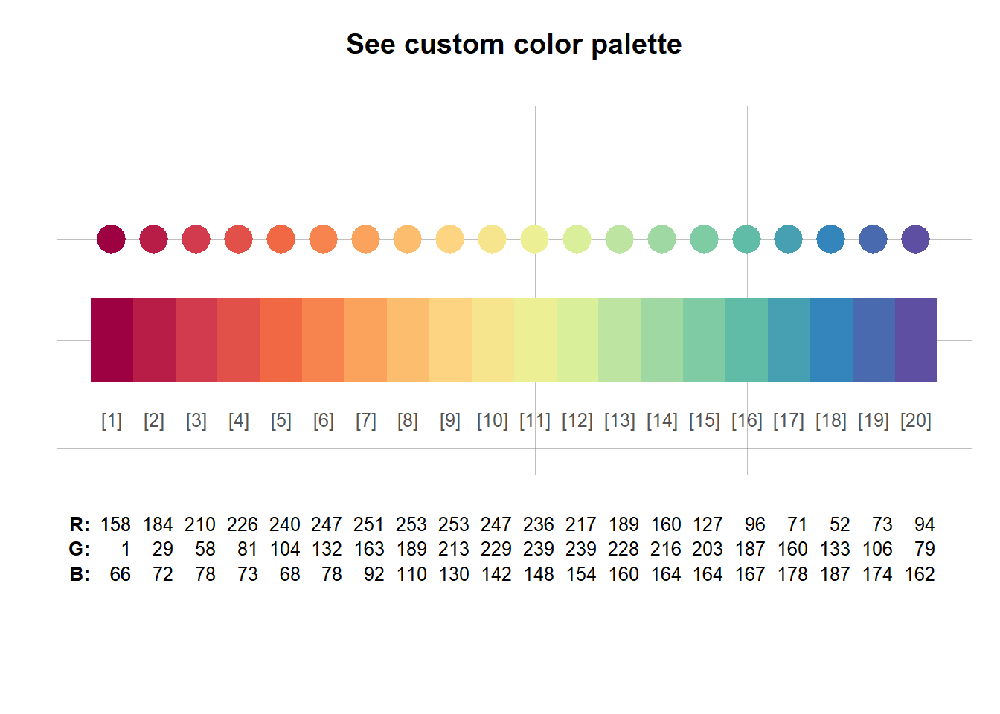
# Some more advanced options include opacity and interpolation method # mypal2= colorRampPalette(mypal1, # interpolate = c("linear"), # Choose btw linear/spline interpolation# alpha = 0.8)(20) # Generate 20 colors, opacity set to 0.8# unikn::seecol(mypal2) #~~ B) User defined color palette using scico packagemypal1 = scico::scico(20, alpha =1.0, direction =-1, palette ="vik") unikn::seecol(mypal1)
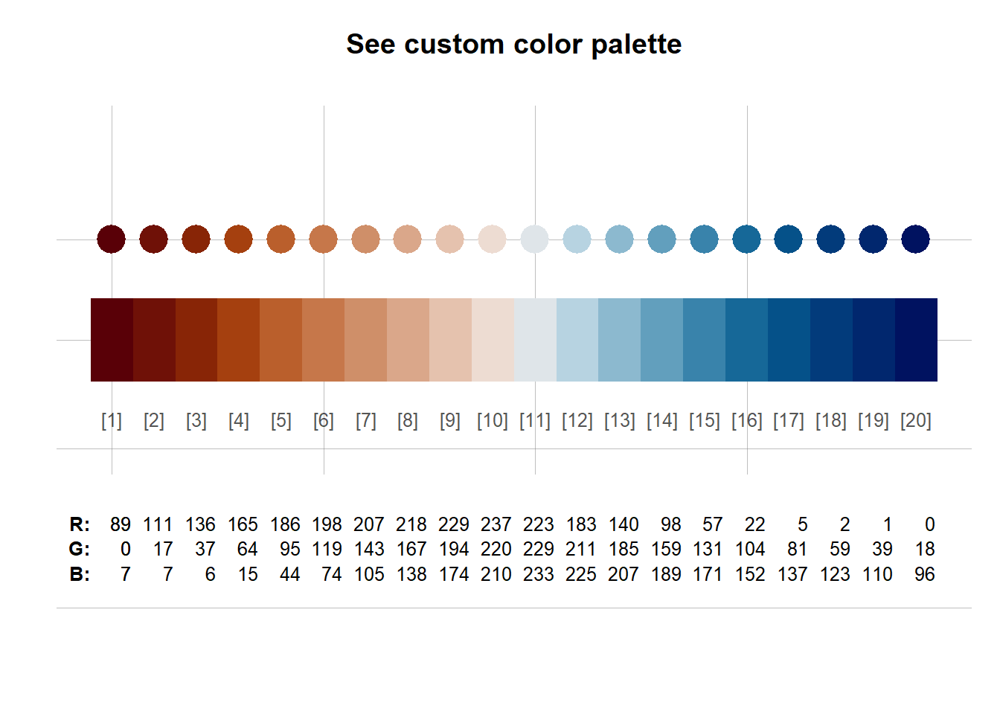
#Check: scico_palette_names() for available palettes! # Try combinations of alpha=0.5, direction =1, and various different color palette #~~ C) User defined color palette using cetcolor packagemypal2 = cetcolor::cet_pal(20, name ="r2") unikn::seecol(mypal2)
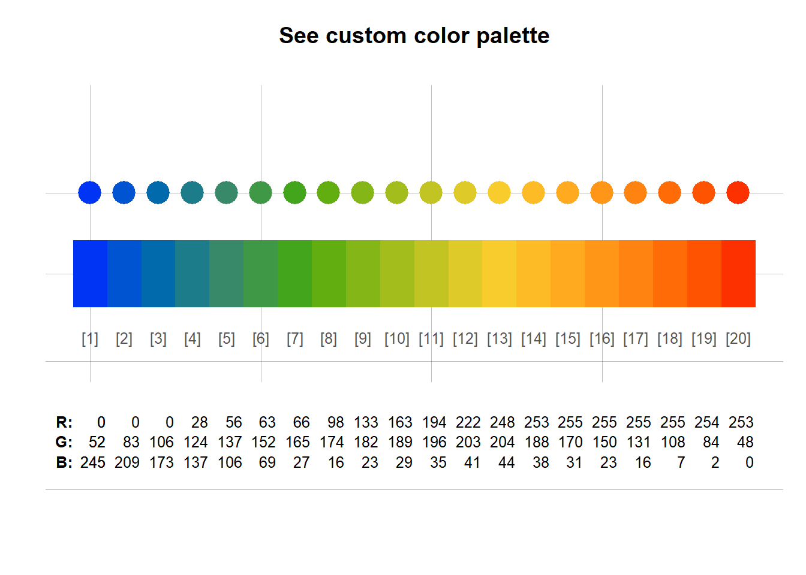
# Or reverse color pal mypal2 =rev(cetcolor::cet_pal(20, name ="r2") ) unikn::seecol(mypal2)
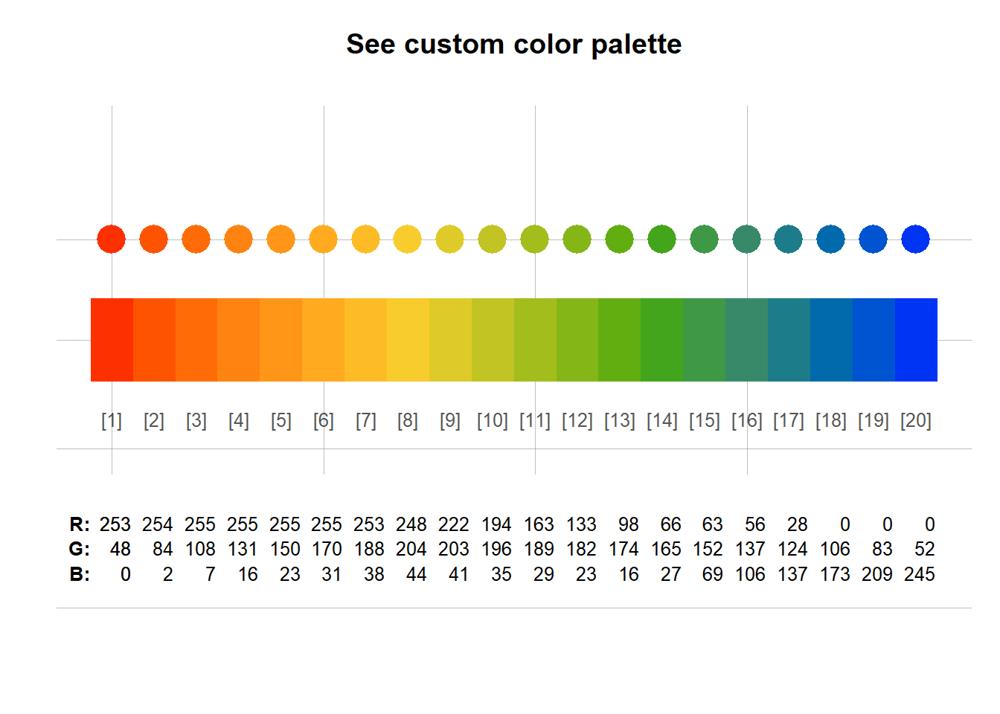
3.2.3 Customizing terra plot options
There is a long list of customization operations available while plotting rasters in R.
We will start with basic plot from terra, and then explore the function by changing different customization options , such as: Try horizontal=TRUE, interpolate=FALSE, change xlim=c(-180, 180) with asp=1, or try legend.shrink=0.4.
sm=rast("./SampleData-master/raster_files/SMAP_SM.tif") # SMAP soil moisture dataterra::plot(sm,main ="Scientific Plot of Raster",#Color optionscol = mypal2, # User Defined Color Palettebreaks =seq(0, 1, by=0.1), # Sequence from 0-1 with 0.1 incrementcolNA ="lightgray", # Color of cells with NA values# Axis options axes=TRUE, # Plot axes: TRUE/ FALSExlim=c(-180, 180), # X-axis limitylim=c(-90, 90), # Y-axis limitxlab="Longitude", # X-axis labelylab="Latitue", # Y-axis label# Legend options legend=TRUE, # Plot legend: TRUE/ FALSE# Miscellaneousmar =c(3.1, 3.1, 2.1, 7.1), # Marginsgrid =FALSE# Add grid lines )
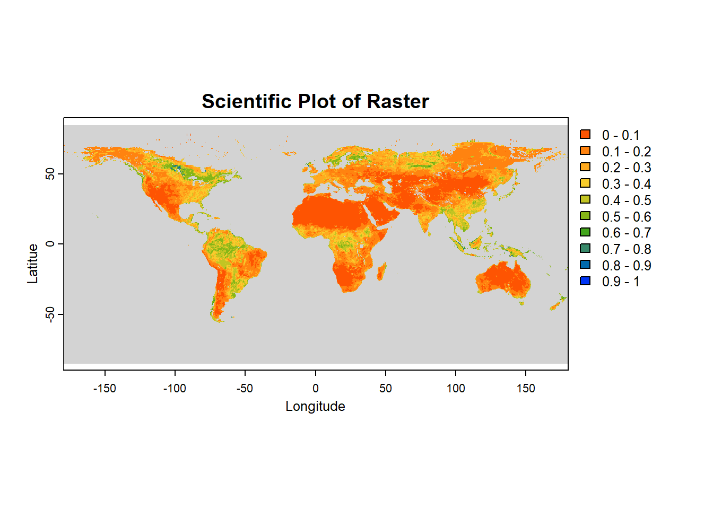
3.2.4 Spatial plotting with tmap
library(tmap)# Set tmap mode: Static plot="plot", Interactive plots="view"tmap_mode("plot") tmap_SM =tm_shape(sm)+tm_grid(alpha =0.2)+# Transparency of gridtm_raster(alpha =0.7, # Transparency of raster plotpalette = mypal2, # Color pelletestyle ="pretty", # Select styletitle ="Volumetric Soil Moisture")+# Plot main titletm_layout(legend.position =c("left", "bottom"))+# Placement of legendtm_xlab("Longitude")+# x-labtm_ylab("Latitude") # y-lab tmap_SM
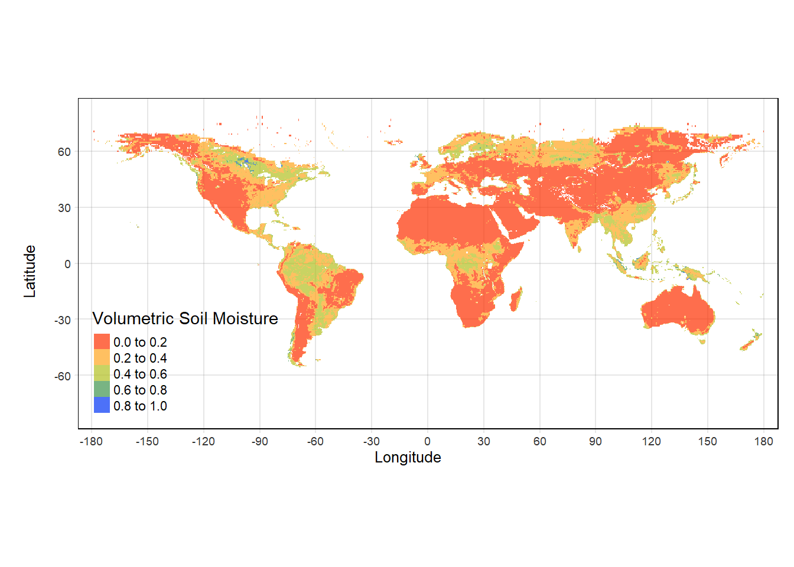
3.2.5 Interactive raster visualization aster data with mapview
Functionality of terra is largely similar to the legacy package raster (created by the same developer, Robert Hijmans). The development of terra is inspired by computational efficiency in geospatial operations. However, since terra is relatively new, and is continually developed, several other packages require conversion of the SpatRasters to rasterLayer for backwards compatibility.
To convert a SpatRaster to RasterLayer, use: sm2=as(sm, "Raster")
tidyterra is a package that add common methods from the tidyverse for SpatRaster and SpatVectors objects created with the terra package. It also adds specific geom_spat*() functions for plotting rasters with ggplot2.
Note on Performance: tidyterra is conceived as a user-friendly wrapper of terra using the tidyverse} methods and verbs. This approach therefore has a cost in terms of performance.
library(tidyterra) library(ggplot2) ggplot() +geom_spatraster(data = sm) +scale_fill_gradientn(colors=mypal2, # Use user-defined colormapname ="SM", # Name of the colorbarna.value ="transparent", # transparent NA cells labels=(c("0", "0.2", "0.4", "0.6", "0.8")), # Labels of colorbarbreaks=seq(0,0.8,by=0.2), # Set breaks of colorbarlimits=c(0,0.8))+theme_void() # Try other themes: theme_bw(), theme_gray(), theme_minimal()
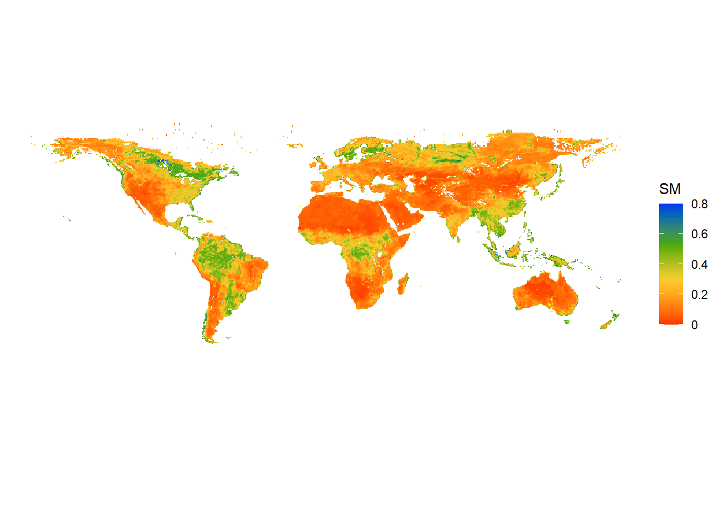
What if we are interested in a particular region and not the entire globe? We can plot the map for a specific extent (CONUS, in this case) by changing the range of coord_sfoption. We will also use a different theme: theme_bw. Try xlim = c(114,153) and ylim = c(-43,-11)! We will also add state boundaries and coastline to the plot.
sm_conus=ggplot() +geom_spatraster(data = sm) +scale_fill_gradientn(colors=mypal2, # User-defined colormapname ="SM", # Name of the colorbarna.value ="transparent", # transparent NA cellslabels=(c("0", "0.2", "0.4", "0.6", "0.8")), # Labels of colorbarbreaks=seq(0,0.8,by=0.2), # Set breaks of colorbarlimits=c(0,0.8)) +coord_sf(xlim =c(-125,-67), # Add extent for CONUSylim =c(24,50))+borders("world", # Add global landmass boundariescolour="gray43", # Fill light-gray color to the landmassfill="transparent")+# Transparent backgroundborders("state", # Add US state borderscolour="gray43", # Use light-gray colorfill="transparent")+# Use transparent background theme_bw() # Black & white theme print(sm_conus)
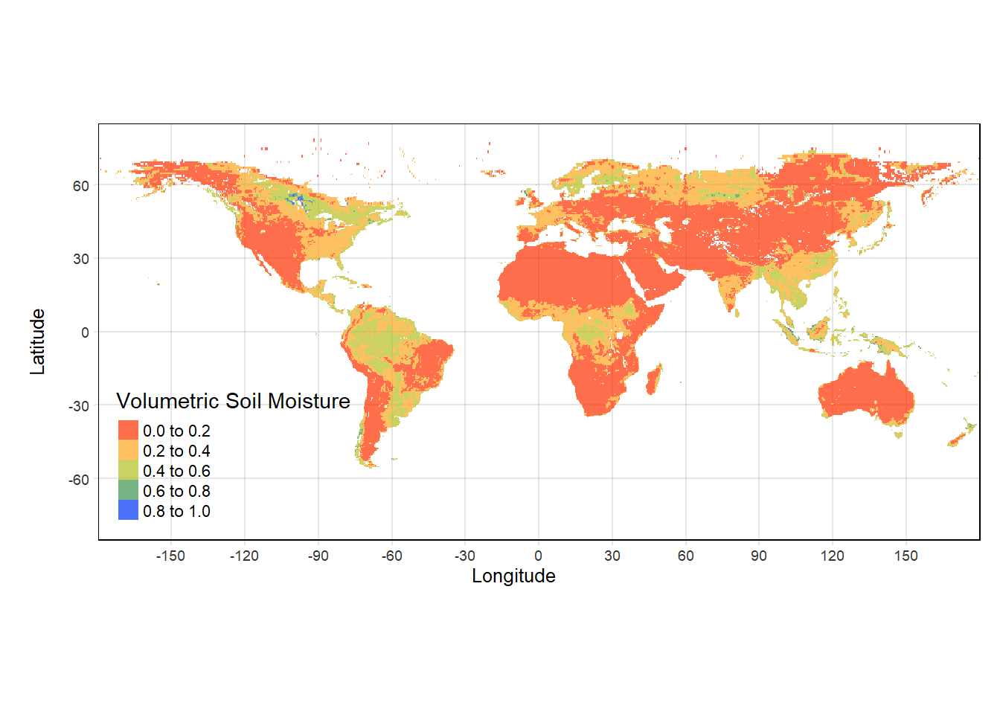
3.2.7 Plotting vector data
Importing and plotting shapefiles is equally easy in R. We will import the shapefile of the updated global IPCC climate reference regions and global coastlineas Simple Feature (sf) Object. Terra can also be used to import shapefiles as vectors using the function vect. However, sf is more versatile, especially for shapefiles. Notice how the attributes of the sf objects resemble an Excel data sheet.
library(sf) library(terra)##~~~~ Use sf package for shapefile # Import the shapefile of global IPCC climate reference regions (only for land) IPCC_shp =read_sf("./SampleData-master/CMIP_land/CMIP_land.shp")# View attribute table of the shapefileIPCC_shp # Notice the attributes look like a data frame
##~~~~ Use terra package for shapefile IPCC_shp =vect("./SampleData-master/CMIP_land/CMIP_land.shp")# IPCC_shp# Load global coastline shapefile coastlines =read_sf("./SampleData-master/ne_10m_coastline/ne_10m_coastline.shp")# Alternatively, download global coastlines from the web # NOTE: May not work if the online server is down# download.file("https://www.naturalearthdata.com/http//www.naturalearthdata.com/download/110m/physical/ne_110m_coastline.zip?version=4.0.1",destfile = 'ne_110m_coastline.zip')# # Unzip the downloaded file# unzip(zipfile = "ne_110m_coastline.zip",exdir = 'ne-coastlines-110m')
Subsetting vector data is similar to selecting a row from a data frame.
ENA_poly=IPCC_shp[4,] # Subset shapefile for Eastern North-America (ENA) ENA_poly # Polygon contents - notice it has 4 attributes
Lets mark the location of Baton Rouge on this map. We will first make a base plot, over which coastlines and spatial location will be added. Again, remember to run these lines together.
#~~~ Add spatial point to shapefile/ raster#~~ Make base mapterra::plot(IPCC_shp[c(3,4,6,7),], # IPCC land regions for Contiguous US.col ="lightgray", # Background colorborder ="black") # Border color#~~ Add coastlineterra::plot(coastlines, col="maroon", add=TRUE) #~~ Add spatial point to the plotLong=-91.0; Lat=30.62# Lat- Long of Baton Rouge, LApoints(cbind(Long,Lat), # Lat-Long as Spatial Pointscol="blue", pch=16, cex=1.2) # Shape, size and color of point
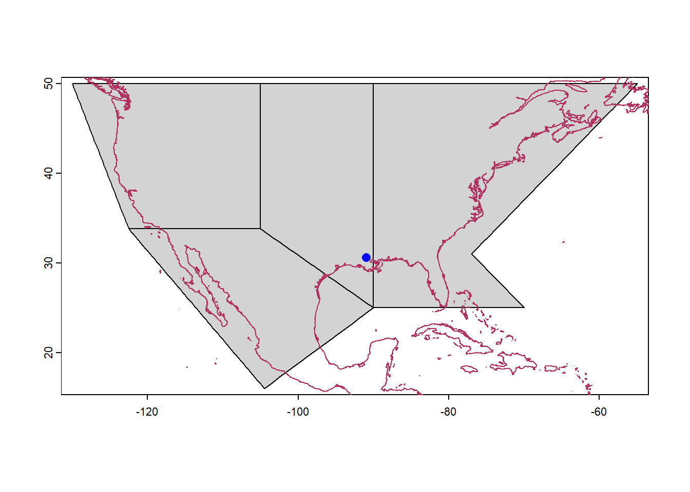
3.2.8 Reprojection of rasters using terra::project
A coordinate reference system (CRS) is used to relate locations on Earth (which is a 3-D spheroid) to a 2-D projected map using coordinates (for example latitude and longitude). Projected CRSs are usually expressed in Easting and Northing (x and y) values corresponding to long-lat values in Geographic CRS.
A good description of coordinate reference systems and their importance can be found here:
In R, the coordinate reference systems or CRS are commonly specified in EPSG (European Petroleum Survey Group) or PROJ4 format (See: https://epsg.io/). Few commonly used projection systems and their codes are summarized below:
The SpatRaster reprojection process is done with project() from the terra package.
# Importing SMAP soil moisture datasm=rast("./SampleData-master/raster_files/SMAP_SM.tif") #~~ Projection 1: NAD83 (EPSG: 4269)sm_proj1 = terra::project(sm, "epsg:4269")terra::plot(sm_proj1, main ="NAD83", # Title of the plotcol = mypal2, # Colormap for the plotaxes =FALSE, # Disable axesbox =FALSE, # Disable box around the plotsasp =NA, # No fixed aspect ratio; asp=NA fills plot to windowlegend=FALSE) # Disable legend
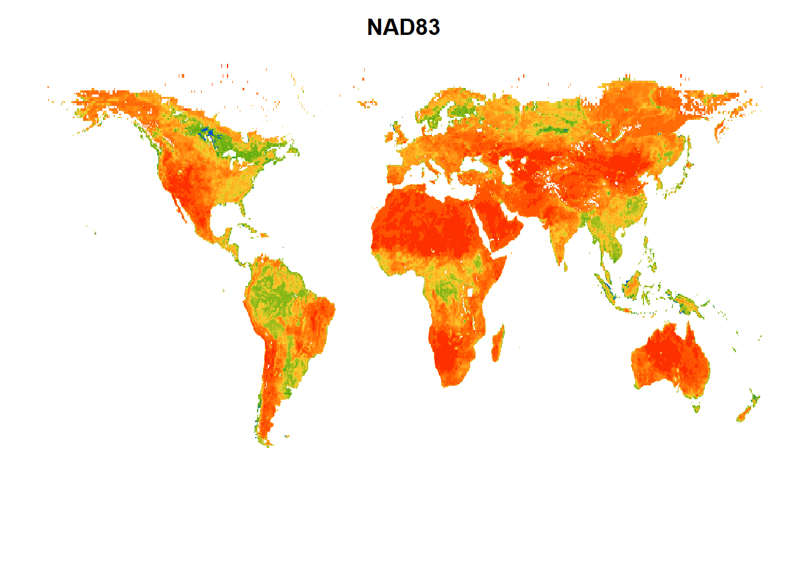
#~~ Projection 2: World Robinson projection (ESRI:54030)sm_proj2 = terra::project(sm, "ESRI:54030")terra::plot(sm_proj2, main ="Robinson", # Title of the plotcol = mypal2, # Colormap for the plotaxes =FALSE, # Disable axesbox =FALSE, # Disable box around the plotsasp =NA, # No fixed aspect ratio; asp=NA fills plot to windowlegend=FALSE) # Disable legend
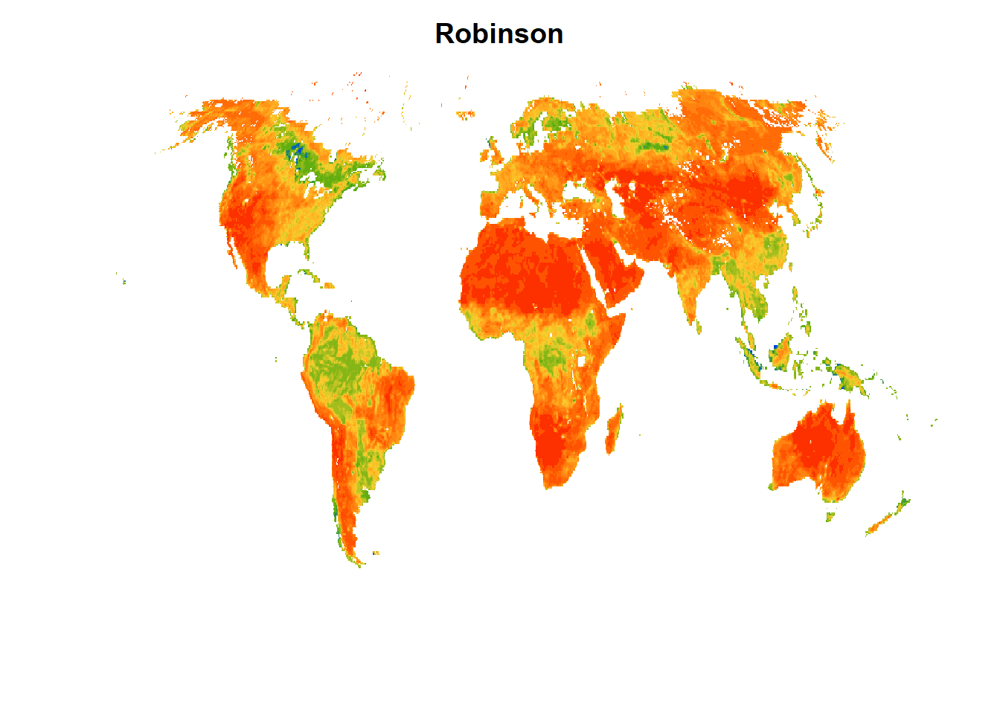
Let us now plot a map of global surface soil moisture, reprojected to Robinson projection. Notice that to add the raster and vector to the plot, we use the functions geom_spatraster and geom_spatvector respectively. Another package spData provides several important datasets for global mapping, including, US states polygons (us_states), World country polygons (world), global elevation (elev.tif), among others (https://jakubnowosad.com/spData/). We will use orld country polygons (world) in our map.
library(spData)# Import global political boundaries from spData packageWorldSHP=terra::vect(spData::world) # Generate plotRobinsonPlot <-ggplot() +geom_spatraster(data = sm)+# Plot SpatRaster layer geom_spatvector(data = WorldSHP, fill ="transparent") +# Add world political mapggtitle("Robinson Projection") +# Add titlescale_fill_gradientn(colors=mypal2, # Use user-defined colormapname ="Soil Moisture", # Name of the colorbarna.value ="transparent",# Set color for NA valueslim=c(0,0.8))+# Z axis limittheme_minimal()+# Select theme. Try 'theme_void'theme(plot.title =element_text(hjust =0.5), # Place title in the middle of the plottext =element_text(size =12))+# Adjust plot text size for visibilitycoord_sf(crs ="ESRI:54030", # Reproject to World Robinsonxlim =c(-152,152)*100000, # Convert x-y limits from decimal Deg. to meterylim =c(-55,90)*100000)print(RobinsonPlot)
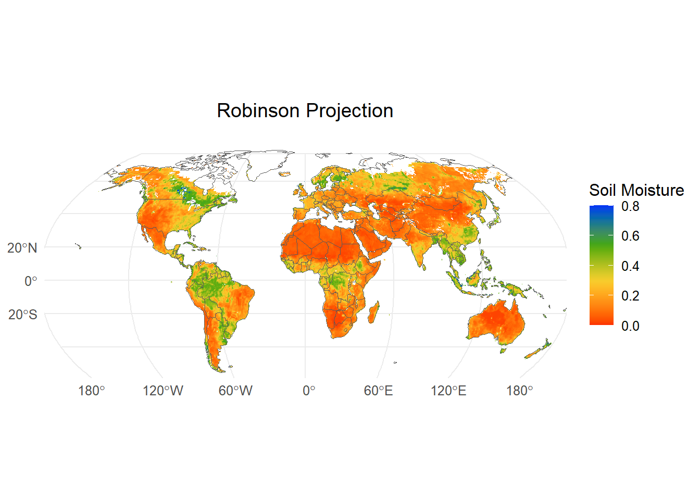
# Save high resolution plot to disk# ggsave(# "globalSM.png", # Name of the file to be created# plot = RobinsonPlot, # Plot to be exported# bg = "white", # Plot background# height = 6, # Height # width = 10, # Width # units = c("in") # Units ("in", "cm", "mm" or "px")# )
Run the commented script above, and view the exported plot saved on the disk.
Entekhabi, Dara, Eni Njoku, and Peggy O’Neill. 2009. “The Soil Moisture Active and Passive Mission (SMAP): Science and Applications.”2009 IEEE Radar Conference. https://doi.org/10.1109/radar.2009.4977030.
Huete, Alfredo, Chris Justice, and Wim Van Leeuwen. 1999. “MODIS Vegetation Index (MOD13).”Algorithm Theoretical Basis Document 3 (213): 295–309.
Iturbide, Maialen, José M. Gutiérrez, Lincoln M. Alves, Joaquín Bedia, Ruth Cerezo-Mota, Ezequiel Cimadevilla, Antonio S. Cofiño, et al. 2020. “An Update of IPCC Climate Reference Regions for Subcontinental Analysis of Climate Model Data: Definition and Aggregated Datasets.”Earth System Science Data 12 (4): 2959–70. https://doi.org/10.5194/essd-12-2959-2020.
Zomer, Robert J, Jianchu Xu, and Antonio Trabucco. 2022. “Version 3 of the Global Aridity Index and Potential Evapotranspiration Database.”Scientific Data 9 (1): 409.